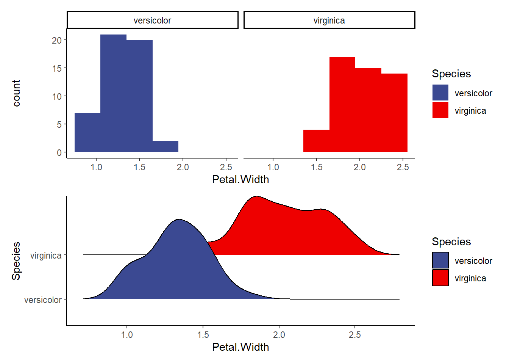
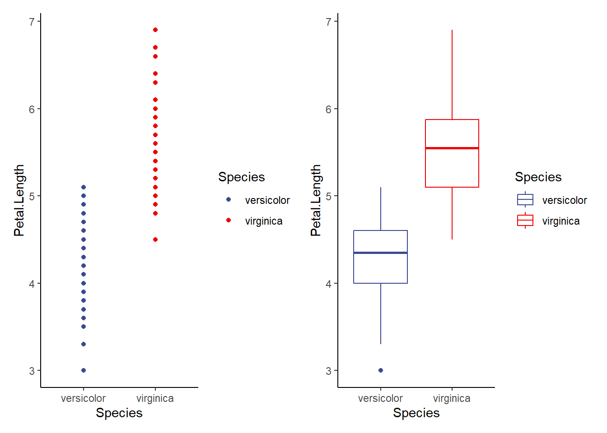
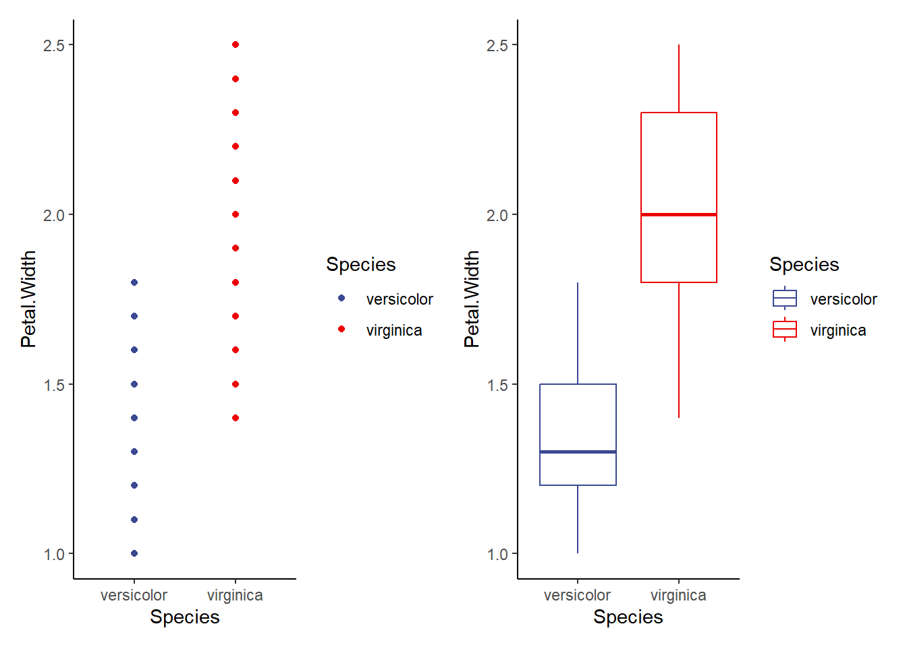
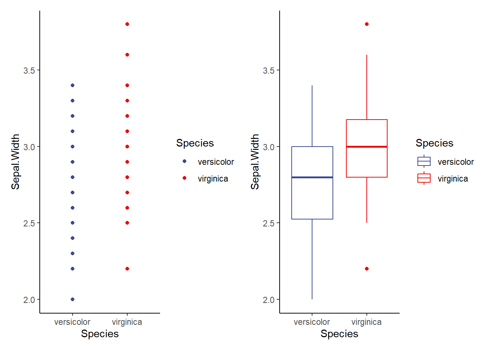
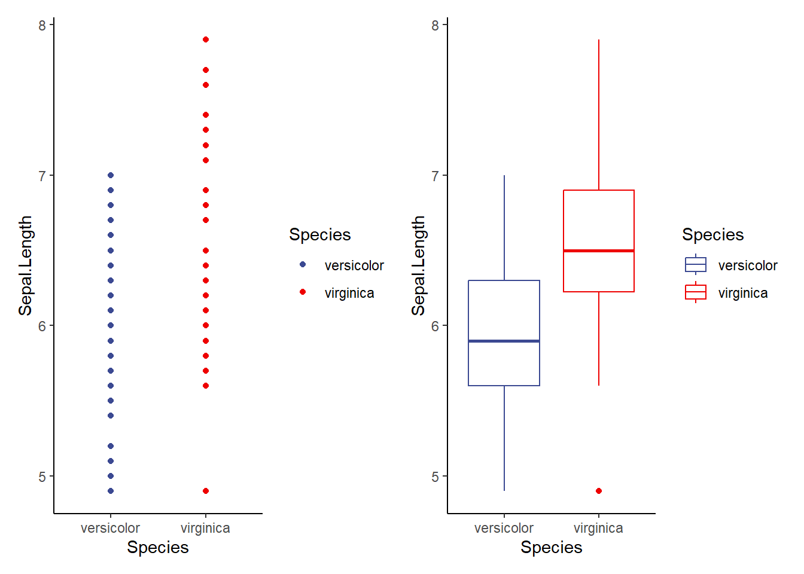
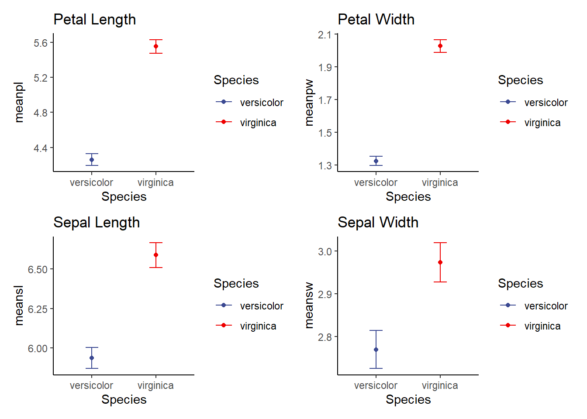

library(tidyverse)
library(see)
library(car)
library(patchwork)
library(ggsci)
library(ggridges)
library(performance)
library(Hmisc) #for correlation matrix
library(corrplot)#to visualize correlation matrices
library(car) #contains some statistical tests we need to assess assumptionsT Test
** The T-test**
Additional Tutorials and Resources for t-tests
1: Load packages
A note on statistics and experimental design
Statistics is a complex field with a long history. We could spend an entire course or even an entire career focusing on the intricate details of statistical decisions and ideas. We’ve already spent some time on this! I want you to have the statistical grounding necessary to plan your experiments and analyze your data. For biologists, statistics are a tool we can leverage to perform the best possible experiments and test our hypotheses. The T-test is the start of our stats journey. It’s a simple test and one that you may not use often, but the theory behind it sets the stage for what is to come!
T-test theory
The t-test (or students’ t-test) is a basic statistical test used to assess whether or not the means of two groups are different from one another. In this test, the null hypothesis is that the two means are equal (or that there is no difference between the two means).
A t-test should only be used if the following assumptions are met:
1.) the two distributions whose means we are comparing must be normally distributed
2.) The variances of the two groups must be equal
Generate example data
iris2<-iris %>%
filter(Species != 'setosa') %>%
droplevels() #removes the empty levels so when we check levels below we only get the ones that are still in the data!
#check levels to make sure we only have 2 species!
head(iris2) Sepal.Length Sepal.Width Petal.Length Petal.Width Species
1 7.0 3.2 4.7 1.4 versicolor
2 6.4 3.2 4.5 1.5 versicolor
3 6.9 3.1 4.9 1.5 versicolor
4 5.5 2.3 4.0 1.3 versicolor
5 6.5 2.8 4.6 1.5 versicolor
6 5.7 2.8 4.5 1.3 versicolorlevels(iris2$Species)[1] "versicolor" "virginica" We will use these data for our examples today. T-test requires only 2 groups/populations. We will assess the alternative hypothesis that one of our numerical variables (sepal length, sepal width, petal length, or petal width) differs by species.
But first, we must test our assumptions
Assumption 1.) Assessing normality
Method 1: the Shapiro-Wilk Test If p < 0.05 then the distribution is significantly different from normal.
Step 1: we need to create separate data frames for each species to assess normality of each variable by species!
versi<-iris2 %>%
filter(Species=='versicolor') %>%
droplevels()
virg<-iris2 %>%
filter(Species=='virginica') %>%
droplevels()
Step 2: We can run our shapiro-wilk tests on each variable if we’d like
shapiro.test(versi$Petal.Length) #this is normally distributed
Shapiro-Wilk normality test
data: versi$Petal.Length
W = 0.966, p-value = 0.1585shapiro.test(versi$Petal.Width) # this is not
Shapiro-Wilk normality test
data: versi$Petal.Width
W = 0.94763, p-value = 0.02728shapiro.test(versi$Sepal.Length) #normal
Shapiro-Wilk normality test
data: versi$Sepal.Length
W = 0.97784, p-value = 0.4647shapiro.test(versi$Sepal.Width) #normal
Shapiro-Wilk normality test
data: versi$Sepal.Width
W = 0.97413, p-value = 0.338shapiro.test(virg$Petal.Length) #normal
Shapiro-Wilk normality test
data: virg$Petal.Length
W = 0.96219, p-value = 0.1098shapiro.test(virg$Petal.Width) #normal
Shapiro-Wilk normality test
data: virg$Petal.Width
W = 0.95977, p-value = 0.08695shapiro.test(virg$Sepal.Length) #normal
Shapiro-Wilk normality test
data: virg$Sepal.Length
W = 0.97118, p-value = 0.2583shapiro.test(virg$Sepal.Width) #normal
Shapiro-Wilk normality test
data: virg$Sepal.Width
W = 0.96739, p-value = 0.1809
Method 2: Visualization
Explore the following visualizations. Do you see clear evidence of normality?
a1<-ggplot(data=iris2, aes(Petal.Length, fill=Species))+
geom_histogram(binwidth = 0.3)+
facet_wrap(~Species)+
theme_classic()+
scale_fill_aaas()
a2<-ggplot(data=iris2, aes(x=Petal.Length, y=Species, fill=Species))+
geom_density_ridges()+ #makes a smooth density curve instead of a histogram!
theme_classic()+
scale_fill_aaas()
a1/a2 #compare the visualizations (they are of the same data)- do we see normality here?Picking joint bandwidth of 0.206
b1<-ggplot(data=iris2, aes(Petal.Width, fill=Species))+
geom_histogram(binwidth = 0.3)+
facet_wrap(~Species)+
theme_classic()+
scale_fill_aaas()
b2<-ggplot(data=iris2, aes(x=Petal.Width, y=Species, fill=Species))+
geom_density_ridges()+ #makes a smooth density curve instead of a histogram!
theme_classic()+
scale_fill_aaas()
b1/b2 #compare the visualizations (they are of the same data)- do we see normality here?Picking joint bandwidth of 0.0972
c1<-ggplot(data=iris2, aes(Sepal.Width, fill=Species))+
geom_histogram(binwidth = 0.3)+
facet_wrap(~Species)+
theme_classic()+
scale_fill_aaas()
c2<-ggplot(data=iris2, aes(x=Sepal.Width, y=Species, fill=Species))+
geom_density_ridges()+ #makes a smooth density curve instead of a histogram!
theme_classic()+
scale_fill_aaas()
c1/c2 #compare the visualizations (they are of the same data)- do we see normality here?Picking joint bandwidth of 0.122
d1<-ggplot(data=iris2, aes(Sepal.Length, fill=Species))+
geom_histogram(binwidth = 0.3)+
facet_wrap(~Species)+
theme_classic()+
scale_fill_aaas()
d2<-ggplot(data=iris2, aes(x=Sepal.Length, y=Species, fill=Species))+
geom_density_ridges()+ #makes a smooth density curve instead of a histogram!
theme_classic()+
scale_fill_aaas()
d1/d2 #compare the visualizations (they are of the same data)- do we see normality here?Picking joint bandwidth of 0.21
Assumption 2.) Assessing equal variance
AKA homogeneity of variance
Methods 1: F-test We will use the F-Test to compare the variance of two populations. This can only be used with 2 populations and is thus only useful when we run a t-test.
H0 for an F-test is: The variances of the two groups are equal.
Ha: The variances are different
p<0.05 allows us to reject the null (H0) and suggests that the variances are different
note: The F-test assumes our data are already normal! You should not run it on non-normal data
#we use var.test to run an F-test
f1<- var.test(Petal.Length ~ Species, data=iris2)
f1 # p>0.05, so we fail to reject H0 (the variances are likely equal)
F test to compare two variances
data: Petal.Length by Species
F = 0.72497, num df = 49, denom df = 49, p-value = 0.2637
alternative hypothesis: true ratio of variances is not equal to 1
95 percent confidence interval:
0.411402 1.277530
sample estimates:
ratio of variances
0.7249678 f2<- var.test(Petal.Width ~ Species, data=iris2)
f2 # p<0.05, so we reject H0 (variances are likely different)
F test to compare two variances
data: Petal.Width by Species
F = 0.51842, num df = 49, denom df = 49, p-value = 0.02335
alternative hypothesis: true ratio of variances is not equal to 1
95 percent confidence interval:
0.2941935 0.9135614
sample estimates:
ratio of variances
0.5184243 f3<- var.test(Sepal.Length ~ Species, data=iris2)
f3 # p>0.05, so we fail to reject H0 (the variances are likely equal)
F test to compare two variances
data: Sepal.Length by Species
F = 0.65893, num df = 49, denom df = 49, p-value = 0.1478
alternative hypothesis: true ratio of variances is not equal to 1
95 percent confidence interval:
0.3739257 1.1611546
sample estimates:
ratio of variances
0.6589276 f4<- var.test(Sepal.Width ~ Species, data=iris2)
f4 # p>0.05, so we fail to reject H0 (the variances are likely equal)
F test to compare two variances
data: Sepal.Width by Species
F = 0.94678, num df = 49, denom df = 49, p-value = 0.849
alternative hypothesis: true ratio of variances is not equal to 1
95 percent confidence interval:
0.5372773 1.6684117
sample estimates:
ratio of variances
0.9467839
Method 2: Levene Test
A more flexible test of homogeneity of variance is the Levene Test. It can be used to compare the variance of many populations (not just 2) and is more flexible than the F-test, so it can be used even if the normality assumption is violated.
this is the most commonly used test for homogeneity of variance
leveneTest() is in the car package in R!
N0: Variances of all populations are equal
p<0.05 allows us to reject H0
l1<- leveneTest(Petal.Length ~ Species, data=iris2)
l1 # p>0.05, so we fail to reject H0 (the variances are likely equal)Levene's Test for Homogeneity of Variance (center = median)
Df F value Pr(>F)
group 1 1.0674 0.3041
98 l2<- leveneTest(Petal.Width ~ Species, data=iris2)
l2 # p<0.05, so we reject H0 (variances are likely different)Levene's Test for Homogeneity of Variance (center = median)
Df F value Pr(>F)
group 1 6.5455 0.01205 *
98
---
Signif. codes: 0 '***' 0.001 '**' 0.01 '*' 0.05 '.' 0.1 ' ' 1l3<- leveneTest(Sepal.Length ~ Species, data=iris2)
l3 # p>0.05, so we fail to reject H0 (the variances are likely equal)Levene's Test for Homogeneity of Variance (center = median)
Df F value Pr(>F)
group 1 1.0245 0.3139
98 l4<- leveneTest(Sepal.Width ~ Species, data=iris2)
l4 # p>0.05, so we fail to reject H0 (the variances are likely equal)Levene's Test for Homogeneity of Variance (center = median)
Df F value Pr(>F)
group 1 0.0873 0.7683
98
Method 3: Visualization
Since p-values are more like guidelines, we also want to visualize our data to assess homogeneity of variance. We can do that in several ways. You might already have some ideas about this! In general, it seems smart to display the raw data as points and as boxplots. Let’s start there!
v1.1<-ggplot(data=iris2, aes(x=Species, y=Petal.Length, color=Species))+
geom_point()+
theme_classic()+
scale_color_aaas()
v1.2<-ggplot(data=iris2, aes(x=Species, y=Petal.Length, color=Species))+
geom_boxplot()+
theme_classic()+
scale_color_aaas()
v1.1+v1.2
v2.1<-ggplot(data=iris2, aes(x=Species, y=Petal.Width, color=Species))+
geom_point()+
theme_classic()+
scale_color_aaas()
v2.2<-ggplot(data=iris2, aes(x=Species, y=Petal.Width, color=Species))+
geom_boxplot()+
theme_classic()+
scale_color_aaas()
v2.1+v2.2
v3.1<-ggplot(data=iris2, aes(x=Species, y=Sepal.Width, color=Species))+
geom_point()+
theme_classic()+
scale_color_aaas()
v3.2<-ggplot(data=iris2, aes(x=Species, y=Sepal.Width, color=Species))+
geom_boxplot()+
theme_classic()+
scale_color_aaas()
v3.1+v3.2
v4.1<-ggplot(data=iris2, aes(x=Species, y=Sepal.Length, color=Species))+
geom_point()+
theme_classic()+
scale_color_aaas()
v4.2<-ggplot(data=iris2, aes(x=Species, y=Sepal.Length, color=Species))+
geom_boxplot()+
theme_classic()+
scale_color_aaas()
v4.1+v4.2
When can we ignore assumptions?
We can if our sample sizes are large. If n is small, we should not ignore this assumption. There are alternatives to dealing with normality that we can discuss in the ANOVA section (such as transforming the data)
We can also ignore the equal variance requirement if we use the Welch t-test (default in R)
A basic T-test in R
Finally, let’s do some T-tests!
H0: No difference between the means of the 2 populations p<0.05 allows us to reject this H0 (indicating a likely difference)
Step 1: Calculate means and error and plot!
meaniris<-iris2 %>%
group_by(Species) %>%
dplyr::summarise(meanpl=mean(Petal.Length), sdpl=sd(Petal.Length), n=n(), sepl=sdpl/sqrt(n), meanpw=mean(Petal.Width), sdpw=sd(Petal.Width), n=n(), sepw=sdpw/sqrt(n), meansl=mean(Sepal.Length), sdsl=sd(Sepal.Length), n=n(), sesl=sdpl/sqrt(n), meansw=mean(Sepal.Width), sdsw=sd(Sepal.Width), n=n(), sesw=sdsw/sqrt(n))
meaniris# A tibble: 2 × 14
Species meanpl sdpl n sepl meanpw sdpw sepw meansl sdsl sesl
<fct> <dbl> <dbl> <int> <dbl> <dbl> <dbl> <dbl> <dbl> <dbl> <dbl>
1 versicolor 4.26 0.470 50 0.0665 1.33 0.198 0.0280 5.94 0.516 0.0665
2 virginica 5.55 0.552 50 0.0780 2.03 0.275 0.0388 6.59 0.636 0.0780
# ℹ 3 more variables: meansw <dbl>, sdsw <dbl>, sesw <dbl>
p1<-ggplot(meaniris, aes(x=Species, y=meanpl, color=Species))+
geom_point()+
geom_errorbar(aes(x=Species, ymin=meanpl-sepl, ymax=meanpl+sepl), width=0.2)+
scale_color_aaas()+
theme_classic()+
labs(title='Petal Length')
p2<-ggplot(meaniris, aes(x=Species, y=meanpw, color=Species))+
geom_point()+
geom_errorbar(aes(x=Species, ymin=meanpw-sepw, ymax=meanpw+sepw), width=0.2)+
scale_color_aaas()+
theme_classic()+
labs(title='Petal Width')
p3<-ggplot(meaniris, aes(x=Species, y=meansl, color=Species))+
geom_point()+
geom_errorbar(aes(x=Species, ymin=meansl-sesl, ymax=meansl+sesl), width=0.2)+
scale_color_aaas()+
theme_classic()+
labs(title='Sepal Length')
p4<-ggplot(meaniris, aes(x=Species, y=meansw, color=Species))+
geom_point()+
geom_errorbar(aes(x=Species, ymin=meansw-sesw, ymax=meansw+sesw), width=0.2)+
scale_color_aaas()+
theme_classic()+
labs(title='Sepal Width')
(p1+p2)/(p3+p4)
Does Petal Length differ by species?
t1<-t.test(data=iris2, Petal.Length~Species, alternative='two.sided', var.equal=FALSE) #two.sided and var.equal= FALSE are default, so we don't have to list them. BUt, we can also change them (as I will show later)
t1 #p<0.05 suggests that there is a significant difference in petal length between species
Welch Two Sample t-test
data: Petal.Length by Species
t = -12.604, df = 95.57, p-value < 2.2e-16
alternative hypothesis: true difference in means between group versicolor and group virginica is not equal to 0
95 percent confidence interval:
-1.49549 -1.08851
sample estimates:
mean in group versicolor mean in group virginica
4.260 5.552
Our p<0.05 suggests that there is a significant effect of species on petal length (petal length differs by species). BUT, do we get a clear explanation of which group is higher or lower? Look at the Welch T-test output and you can see the means! You can also use the graph we made to visualize this!
Does Petal Width differ by species?
t2<-t.test(data=iris2, Petal.Width~Species, alternative='two.sided', var.equal=FALSE) #two.sided and var.equal= FALSE are default, so we don't have to list them. BUt, we can also change them (as I will show later)
t2
Welch Two Sample t-test
data: Petal.Width by Species
t = -14.625, df = 89.043, p-value < 2.2e-16
alternative hypothesis: true difference in means between group versicolor and group virginica is not equal to 0
95 percent confidence interval:
-0.7951002 -0.6048998
sample estimates:
mean in group versicolor mean in group virginica
1.326 2.026
Does Sepal Width differ between species?
t3<-t.test(data=iris2, Sepal.Width~Species, alternative='two.sided', var.equal=FALSE) #two.sided and var.equal= FALSE are default, so we don't have to list them. BUt, we can also change them (as I will show later)
t3
Welch Two Sample t-test
data: Sepal.Width by Species
t = -3.2058, df = 97.927, p-value = 0.001819
alternative hypothesis: true difference in means between group versicolor and group virginica is not equal to 0
95 percent confidence interval:
-0.33028364 -0.07771636
sample estimates:
mean in group versicolor mean in group virginica
2.770 2.974
Does Sepal Length differ between species?
t4<-t.test(data=iris2, Sepal.Length~Species, alternative='two.sided', var.equal=FALSE) #two.sided and var.equal= FALSE are default, so we don't have to list them. BUt, we can also change them (as I will show later)
t4
Welch Two Sample t-test
data: Sepal.Length by Species
t = -5.6292, df = 94.025, p-value = 1.866e-07
alternative hypothesis: true difference in means between group versicolor and group virginica is not equal to 0
95 percent confidence interval:
-0.8819731 -0.4220269
sample estimates:
mean in group versicolor mean in group virginica
5.936 6.588 SO, when is a t-test actually useful and when isn’t it? We use a T-test ONLY when we want to compare two means / two populations. If we have more than 2 groups, a T-test is not appropriate! Instead, we need to use an analysis of variance (ANOVA) or possibly something more complex!